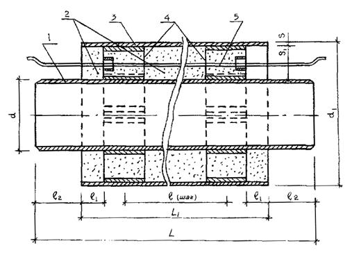
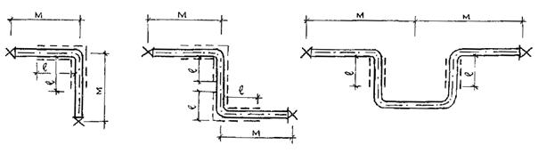

ДЕПАРТАМЕНТ СТРОИТЕЛЬСТВА
НАУЧНО-ТЕХНИЧЕСКОЕ УПРАВЛЕНИЕ
МОССТРОЙЛИЦЕНЗИЯ
ВЕДОМСТВЕННЫЕ
СТРОИТЕЛЬНЫЕ НОРМЫ
по проектированию и бесканальной
прокладке внутриквартальных
тепловых сетей из труб
с индустриальной теплоизоляцией
из пенополиуретана
в полиэтиленовой оболочке
ВСН 11-94
Москва - 1996
Ведомственные строительные нормы разработаны НИИМосстроем в соответствии с Постановлением Правительства Москвы № 992 от 1 ноября 1994 г. "О комплексной программе по разработке н выпуску московских городских строительных норм и правил отраслевых стандартов и технических условий для строительства в городе Москве" (приложение № 4, п.2) по заданию Научно-технического управления Департамента строительства (договор № 2-3/94 от 31 мая 1994 г. по теме "Переработка ВСН 233-87 по проектированию и бесканальной прокладке внутриквартальных тепловых сетей из труб с индустриальной теплоизоляцией из пенонолиуретана в полиэтиленовой оболочке").
Настоящие строительные нормы разработаны в результате обобщения опыта проектирования и опытного строительства в Москве тепловых сетей диаметром от 57 до 219 мм из труб с теплоизоляцией из ППУ, промышленный выпуск которых освоен Московским опытно-экспериментальным трубозаготовительным комбинатом "МОЭТЗК" (АО "Мосфлоулайн").
В настоящей редакции ВСН учтены основные замечания АО "Моспроект", МГП "Мостеплоэнерго", Технического управления АО ХК "Главмосстрой" по 1-й редакции ВСН.
ВСН разработаны к.т.н. А. В. Сладковым (руководитель работы) при участии науч. сотруд. О. П. Симаковой, инж. Л. М. Гамаевой, техника С. С. Силаковой.
Ведомственные строительные нормы разработаны при участии Мосстройлицензии (Ю. И. Столяров, к.т.н. В. Д. Фельдман).
|
Департамент строительства |
Ведомственные |
ВСН 11-94 |
|
Научно-техническое управление |
ВСН по проектированию и бесканальной прокладке внутриквартальных тепловых сетей из труб с индустриальной теплоизоляцией из пенополиуретана в полиэтиленовой оболочке |
Взамен Главмосстрой |
1.1. Настоящие ВСН распространяются на подземную бесканальную прокладку внутриквартальных тепловых сетей с температурой теплоносителя до 130 °С и "пиковой" температурой до 150 °С.
1.2. Для внутриквартальных тепловых сетей в г. Москве должны использоваться стальные трубы с теплогидроизоляцией из теплостойкого пенополиуретана (бесфреонных марок) в трубе-оболочке из полиэтилена низкого давления, по ТУ 400-24-578-92 (с изменениями № 1 и № 2) Московского опытно-экспериментального трубозаготовительного комбината (АО "Мосфлоулайн").
Сортамент указанных труб представлен в табл. 1 (условные обозначения - см. рис. 1).
Примечание. Допускается применение в г. Москве для бесканальной прокладки тепловых сетей труб с аналогичным типом изоляции инофирм, прошедших аттестацию на соответствие показателей свойств теплоизоляции ТУ 400-24-578-92 и стандарту JSOEN 253, и по которым имеется заключение НИИМосстроя с оценкой срока службы теплоизоляции из пенополиуретана.
|
Внесены НИИМосстроем |
Утверждены: Научно-техническим управлением Департамента строительства "27" декабря 1994 г. |
Дата введения в действие "1" января 1995г. |

Рис. 1. Индустриальная конструкция теплогидроизоляции:
1 - стальная труба с дробеметной обработкой наружной поверхности; 2 - пенополиуретан; 3 - оболочка из полиэтилена низкого давления; 4 - центрирующие опоры из полипропилена; 5 - проволочные проводники-индикаторы системы оперативного дистанционного контроля (ОДК) состояния теплоизоляции из ППУ
Сортамент труб с индустриальной теплоизоляцией из пенополиуретана в полиэтиленовой оболочке
|
Диаметр труб, мм |
Толщина, мм |
Длина, мм |
Ориентировочная масса трубы длиной 12 м с теплоизоляцией, м, кг |
|||||
|
условных стальных труб |
наружный стальных труб, d |
наружный труб-оболочек ПНД, d1 |
стальных труб (минимальн.) |
оболочки ПНД, (с допуском), S |
теплоизоляции из ППУ, S1 |
шаг опор, l |
неизолированных концов труб, l2 |
|
|
50 |
57 |
140 |
3,0 |
3,0+0,6 |
38,5 |
975 |
150+0-20 |
79,3 |
|
50 |
60 оц |
150 |
3,5 |
3,0+0,6 |
37,0 |
975 |
150+0-20 |
84,0 |
|
70 |
76 |
160 |
3,0 |
3,0+0,6 |
39,0 |
975 |
150+0-20 |
103,2 |
|
65 |
75,5 оц |
160 |
4,0 |
3,0+0,6 |
39,0 |
975 |
150+0-20 |
115,2 |
|
80 |
89 |
180 |
3,0 |
3,0+0,6 |
42,5 |
965 |
150+0-20 |
159,1 |
|
100 |
102 оц |
200 |
4,0 |
3,2+0,6 |
45,8 |
965 |
150+0-20 |
136,5 |
|
100 |
108 |
200 |
3,5 |
3,2+0,6 |
42,8 |
965 |
150+0-20 |
162,5 |
|
100 |
114 оц |
200 |
4,5 |
3,2+0,6 |
39,8 |
965 |
150+0-20 |
199,0 |
|
125 |
133 |
225 |
3,5 |
3,5+0,6 |
42,5 |
955 |
150+0-20 |
192,6 |
|
150 |
152 оц |
250 |
4,5 |
3,9+0,6 |
45,1 |
955 |
150+0-20 |
259,1 |
|
150 |
152 |
250 |
4,5 |
3,9+0,6 |
41,6 |
955 |
150+0-20 |
261,2 |
|
150 |
159 |
250 |
4,5 |
3,9+0,6 |
41,6 |
955 |
150+0-20 |
261,2 |
|
150 |
165 оц |
250 |
4,5 |
3,9+0,6 |
38,6 |
955 |
150+0-20 |
274,1 |
|
200 |
219 |
315 |
5,0 |
5,6+0,8 |
42,4 |
950 |
150+0-20 |
460,5 |
|
250 |
273 |
400 |
5,0 |
6,3+0,8 |
55 |
935 |
150+0-20 |
619,2 |
(Измененная редакция. Изм. № 1).
1.3. Физико-механические и другие показатели свойств теплоизоляции труб приведены в табл. 2
Таблица 2
Показатели свойств изоляции и изолированных труб по ТУ 400-2-578-92
|
№ пп |
Наименование показателей, единицы измерения |
Нормируемое значение показателя |
|
1. |
Внешний вид |
Соответствует стандартному образцу |
|
2. |
Кажущаяся плотность пенопласта в конструкции, кг/м3, не менее |
60 |
|
3. |
Прочность пенопласта на сжатие, МПа, не менее |
0,3 |
|
4. |
Водопоглощение пенопласта при кипячении 90 мин, % по объему, не более |
10 |
|
5. |
Объемная доля закрытых пор, %, не менее |
87 |
|
6. |
Предел текучести при растяжении полиэтилена оболочки, МПа, не менее |
21 |
|
7. |
Относительное удлинение при разрыве полиэтилена оболочки, %, не менее |
210 |
|
8. |
Прочность трубной конструкции на сдвиг в осевом направлении, МПа, не менее |
0,12 |
|
9. |
Прочность трубной конструкции на сдвиг в тангенциальном направлении, МПа, не менее |
0,2 |
(Измененная редакция. Изм. № 1).
1.4. В комплекте с теплоизолированными трубами следует применять теплоизолированные пенополиуретаном фасонные изделия, детали и элементы по ТУ 400-2-24-581-92 (с изменением № 1) и каталогу АОЗТ "Мосфлоулайн". Перечень фасонных деталей и элементов приведен в приложении 1 к настоящим ВСН.
Примечания: 1. При необходимости по специальному заказу могут поставляться фасонные изделия, элементы и детали не указанные в перечне видов.
2. Допускается комплектование труб фасонными изделиями, деталями и элементами импортного производства при наличии сертификата соответствия Госстандарта РФ или Минстроя РФ.
(Измененная редакция. Изм. № 1).
2.1. При проектировании внутриквартальных тепловых сетей из труб и соединительных деталей и элементов с индустриальной теплоизоляцией из пенополиуретана в полиэтиленовой оболочке следует соблюдать общие требования СНиП 2.04.07-86 и СНиП 3.05.03-85.
2.2. При проектировании тепловых сетей следует руководствоваться положениями настоящих ВСН и положениями пособия АО "Моспроект" пп 27.2.2-97 раздел 27 "Теплоснабжение", серия 2.2. "Типовые детали бесканальной прокладки теплосети из труб с пенополиуретановой изоляцией в полиэтиленовой оболочке" (Арх. 894376).
2.3. Глубина заложения труб тепловых сетей от поверхности земли или дорожного покрытия должна приниматься не менее 0,5 м вне пределов проезжей части и не менее 0,6 м в пределах проезжей части, считая до верха полиэтиленовой оболочки теплоизоляции.
Допускаемая расчетная глубина заложения теплоизолированных труб (без учета транспортной нагрузки) должна составлять 3,1 м.
Примечание. При необходимости контрольных расчетов глубин заложения теплопроводов с изоляцией из ППУ в ПЭ оболочке для конкретных условий прокладки расчетное сопротивление следует принимать: пенополиуретана - 0,1 МПа, полиэтиленовой оболочки - 1,6 МПа.
(Измененная редакция. Изм. № 1).
2.4. При пересечении городских и местных проездов прокладку теплоизолированных труб, как правило, следует выполнять согласно СНиП 2.04.07-86 в стальных футлярах, в отдельных случаях в каналах или полупроходных каналах высотой не менее 1,4 м.
При этом теплоизолированные трубы укладывают на направляющие опоры, тип и конструкция которых определяется проектом.
(Измененная редакция. Изм. № 1).
2.5. При прокладке тепловых сетей из труб с индустриальной теплоизоляцией из пенополиуретана в полиэтиленовой оболочке дренаж предусматривать не следует.
2.6. Для отвода воды из камер и спускников следует предусматривать водовыпуски.
2.7. Необходимость установки воздушников и спускников, их количества и места размещения на теплопроводе должна определяться проектом.
2.8. Компенсация температурных линейных деформаций теплопроводов с теплоизоляцией из ППУ должна предусматриваться за счет использования L-, Z-, П-образных компенсаторов, устраиваемых из теплоизолированных отводов 90° и 120° (рис. 2), теплоизолированных осевых сифлоновых компенсаторов или миникомпенсаторов - при "холодном" методе компенсации теплопроводов, а также стартовых компенсаторов - при предварительном нагреве теплопроводов.
(Измененная редакция. Изм. № 1).
2.9. Длина участка (М) теплопровода с теплоизоляцией из ППУ (от неподвижной опоры до угла поворота или компенсатора) не должна превышать значений, приведенных в табл. 3 (при глубине заложения 1,5 м).
Максимальные расстояния между неподвижной опорой и углом компенсатора
|
Наружный диаметр стальных труб с теплогидроизоляцией (мм) |
Расстояние М (м) |
|
57 (50) х 140 |
25 |
|
76 (75,5) х 160 |
27 |
|
89 (88,5) х 180 |
29 |
|
102 (108, 114) х 200 |
40 |
|
133 х 225 |
45 |
|
152 (159, 165) х 250 |
50 |
|
219 х 315 |
70 |
|
273 х 400 |
70 |
Примечания: 1. Расстояние "М" рассчитано для заложения теплопровода в песчаный грунт на глубину 1,5 м.
2. При других конкретных условиях прокладки и эксплуатации теплопроводов расстояние "М" следует уточнять расчетом на стадии проектирования тепловых сетей с учетом объемной массы грунта, коэффициента трения и коэффициента статического давления.
(Измененная редакция. Изм. № 1).
2.10. При расчете расстояний между компенсаторами и неподвижными опорами в конкретных условиях прокладки тепловых сетей значения температурных удлинений Δl (мм), изолированных ППУ труб следует определять по формуле:
Δl = 0,8 . 1 . Δt . L,
где l - длина участка, м
L - коэффициент линейного расширения (следует принимать 1,2 .10-2 мм/(м°С);
Δt - расчетная разность температур теплоносителя и наружного воздуха (следует принимать 176 °С)
2.11. Исключен. (Изм. № 1).
2.12. При расстановке неподвижных опор и компенсаторов следует предусматривать:
- расположение П-образного компенсатора, как правило, в середине участка;
- установку неподвижной опоры у здания ЦТП.
2.13. При установке П-образных или сильфонных осевых компенсаторов следует производить их предварительную растяжку.
Величину их предварительной растяжки следует производить по расчету.
(Измененная редакция. Изм. № 1).
2.14. Для обеспечения тепловых удлинений изолированных ППУ трубопроводов в местах расположения L-, Z-, П-образных компенсаторов непосредственно в грунте необходимо предусматривать устройство эластичных прокладок (рис. 2) толщиной 2Δl, где Δl - температурное удлинение изолированного теплопровода, высота и длина эластичных прокладок определяются проектом.
(Измененная редакция. Изм. № 1).
2.15. Размеры участков на углах L-Z и П-образных компенсаторов должны выбираться согласно табл. 4

Рис. 2. Схема размещения компенсирующих прокладок из пенопласта (прокладка "Вилатерм" и блоков ПСБ) на L-Z-П-образных компенсаторах
Длина участков L-Z и П-образных компенсаторов с компенсирующими прокладками (обозначения - см. рис. 2)
|
Расстояние от неподвижной опоры М (м) |
Длина участка (мм) для труб с условным диаметром теплогидроизоляции (мм) |
||||||
|
50х140 |
65х160 |
80х180 |
100х200 |
125х225 |
150х250 |
200х315 |
|
|
более 12 до 24 |
1,0 |
1,0 |
1,0 |
1,0 |
1,0 |
1,0 |
1,2 |
|
24-36 |
1,0 |
1,0 |
2,0 |
2,0 |
2,0 |
2,0 |
2,4 |
|
36-48 |
- |
2,0 |
2,0 |
2,0 |
2,0 |
2,0 |
2,4 |
|
48 - 66 |
- |
- |
3,0 |
3,0 |
3,0 |
3,0 |
3,6 |
|
66- 84 |
- |
- |
- |
- |
- |
3,0 |
3,6 |
2.16. Размеры траншей при 2-трубной и 40-трубной прокладках, расстояния между стенками и теплоизолированными трубопроводами, расстояния между теплопроводами, толщину "постели" и обсыпки теплопровода следует принимать по пособию АО "Моспроект" ПП 27-2.2-93.
2.17. Проход теплопровода сквозь стенки камер следует выполнять с помощью гильзы из стальной трубы с заделкой зазора смоляным канатом и со стороны грунта цементным раствором марки 100.
При этом длина конца трубы с индустриальной теплоизоляцией из ППУ, входящей в камеру, не должна превышать 150 мм.
Примечание. Допускается применение гильз из резины.
2.18. Проход теплопровода сквозь стенки техподполья следует выполнять также с помощью гильзы из стальной трубы забетонированной в стенку из бетона В 15, с заделкой зазора смоляным канатом и цементным раствором марки 100 с обертыванием полиэтиленовой оболочки теплоизоляции в проеме и внутри техподполья рулонным стеклопластиком РСТХ-Л.В.
2.19. Для тепловых сетей с индустриальной теплоизоляцией из ППУ в полиэтиленовой оболочке дополнительных мероприятий по электрозащите предусматривать не следует.
2.20. При проектировании внутриквартальных тепловых сетей теплопроводы с теплоизоляцией из ППУ должны быть снабжены проводниками-индикаторами и оборудованы системой оперативного контроля состояния теплоизоляционного слоя из ППУ в ходе эксплуатации теплопроводов; система ОДК должна устанавливаться по специальному проекту.
Система ОДК должна содержать:
- не менее 2-х проводников-индикаторов диаметром не менее 1,0 мм, закладываемых в пенополиуретановую теплоизоляцию труб;
- прибор для фиксирования увлажнения теплоизоляции;
- прибор для определения координат места (по длине трубопровода) возникновения увлажнения теплоизоляции (инвентарно);
- узлы ввода-вывода проводников-индикаторов из теплоизоляции труб;
- сопутствующие подключающие устройства, кабели и пр.
(Измененная редакция. Изм. № 1).
2.21. В местах ответвления трубопроводов к отдельным зданиям запорную арматуру устанавливать не следует. При этом на вводах в здание должна устанавливаться запорная арматура повышенной надежности (шарового или цилиндрического типа, например фирмы "Клингер"), что определяется проектом.
(Измененная редакция. Изм. № 1).
2.22. При устройстве ответвлений расстояния между ответвлениями и поворотами, компенсаторами, а также между ответвлениями и неподвижными опорами определяются проектом.
(Измененная редакция. Изм. № 1).
3.1. Транспортировка и хранение изолированных труб, соединительных деталей и элементов должны осуществляться в соответствии с требованиями ТУ 400-24-578-92 и ТУ 400-24-581-92.
3.2. Изолированные трубы должны храниться на приобъектных складах и стройплощадках в штабелях высотой не более 2 мм на подготовленной и выровненной площадке.
Причем нижний ряд труб должен располагаться на песчаных подушках высотой не менее 300 мм, шириной 0,7-0,9 м с шагом 5,0 м.
(Измененная редакция. Изм. № 1).
3.3. Трубы, детали и элементы при хранении должны быть защищены от воздействия прямых солнечных лучей (располагаться в тени или под навесом или быть прикрыты рулонным материалом).
3.4. Полуцилиндры и термоусаживающиеся полиэтиленовые манжеты, резиновые гильзы должны располагаться в помещениях или под навесом в заводской упаковке.
3.5. Перевозку, погрузку и разгрузку изолированных труб и деталей следует производить при температуре до минус 18 °С.
(Измененная редакция. Изм. № 1).
3.6. Погрузку и разгрузку труб следует производить с использованием траверс и мягких "полотенец" шириной не менее 100 мм или стропа, располагаемых на трубах на 1/3 по их длине, а отводы, тройники, неподвижные опоры - с помощью строп СКК 1-1.0 4000, протягиваемых внутрь деталей.
(Измененная редакция. Изм. № 1).
4.1. Работы по монтажу тепловых сетей из труб с индустриальной теплоизоляцией из пенополиуретана в полиэтиленовой оболочке следует производить с учетом общих требований СНиП 3.05.03-85 "Тепловые сети".
Земляные работы
4.2. Разработка траншей и котлованов для бесканальной прокладки теплопроводов должна выполняться в соответствии с требованиями главы СНиП 3.01.03-85 "Земляные сооружения основания и фундаменты" и "Правил производства земляных и строительных работ в г. Москве".
(Измененная редакция. Изм. № 1).
4.3. Ширина траншеи при бесканальной прокладке теплопроводов должна приниматься по пособию ПП 27.2.2-93 АО "Моспроект" (шифр 41-93-7716).
4.4. Разработка траншей должна выполняться до проектных отметок без нарушения естественной структуры грунта в основании с недобором не более 10 см, при переборе грунта более 10 см места перебора должны заполняться песком или местным грунтом с последующим трамбованием до коэффициента плотности 0,98.
4.5. Перед устройством песчаного основания под трубы проводится освидетельствование дна траншеи, выровненных участков перебора грунта, проверка соответствия уклонов дна траншеи проекту и оформление результатов освидетельствования актом на скрытые работы.
4.6. На дне траншеи устраивают подсыпку толщиной 10 см из песка с коэффициентом фильтрации не менее 20 м/сут.
4.7. В основании траншеи (с учетом подсыпки) разрабатывают приямки для сварки, теплоизоляции и гидроизоляции стыков. Размер приямков должен быть: глубина 0,4 м, длина (d1 + 1,2 м), где d1 - диаметр оболочки теплопроводов.
4.8. Обратная засыпка траншей, котлованов грунтом, ее уплотнение производится с соблюдением требований "Технических правил на возведение насыпей и засыпку траншей в г. Москве".
4.9. При засыпке теплопровода над верхом полиэтиленовой оболочки изоляции труб обязательно устройство защитного слоя (стыки не засыпают) из песчаного грунта толщиной не менее 15 см, не содержащего твердых включений (щебня, камней, кирпичей и т.д.) с послойным уплотнением трамбовками (особенно пространства между теплопроводами, а также между ними и стенками траншей).
4.10. После испытаний теплопровода производится засыпка и уплотнение мест стыков (особенно тщательно зоны приямков), а также равномерная засыпка траншеи слоем песчаного грунта толщиной 30 см с разравниванием грунта вручную. Дальнейшая засыпка выполняется, как правило, бульдозером, при этом толщина уплотняемых слоев не должна превышать 30 см. При этом обратный грунт не должен содержать обломков строительных деталей, материалов и пр.
(Измененная редакция. Изм. № 1).
Монтажные работы
4.11. При выполнении монтажных работ подлежат приемке согласно СНиП 3.05.03-85 с составлением актов освидетельствования по форме СНиП 3.01.01-85 следующие виды работ: подготовка сварных стыков стальных труб под противокоррозионное покрытие, выполнение покрытия, теплоизоляции сварных стыков, гидроизоляция сварных стыков термоусаживающими полиэтиленовыми манжетами. Подлежат также приемке места контрольных выводов проводников-индикаторов системы ОДК.
4.12. По растяжке Z- и П-образных компенсаторов составляется акт по форме, приведенной в приложении 1 к СНиП 3.05.03-85.
4.13. Бесканальную прокладку тепловых сетей из труб с теплоизоляцией из ППУ с полиэтиленовой оболочкой следует производить по ППР, разработанным на основе настоящих ВСН, и технологической карте Мосоргстрой (арх. № 10604).
4.14. Перед укладкой трубы соединительные детали и элементы тщательно осматриваются на предмет наличия: трещин, сколов, глубоких надрезов, проколов, вырывов, разрывов и других механических повреждений полиэтиленовой оболочки теплоизоляции. При обнаружении трещин в оболочке любого вида, глубоких надрезов протяженностью менее 300 мм их заделывают с помощью заварки (газовым теплоносителем или экструзионной сварки) или наложения термоусаживающих манжет (целиковых или отрезка).
При наличии в оболочке продольных трещин и глубоких надрезов (более 30 % от толщины стенки) протяженностью более 300 мм поперечные трещины размером более половины периметра оболочки трубы и детали отбраковывают (дефектные трубы после разрезки могут быть использованы для монтажа).
4.15. Трубы и фасонные детали раскладывают на бровке или дне траншеи с помощью крана или трубоукладчика, мягких "полотенец" или строп (см. п. 3.6).
(Измененная редакция. Изм. № 1).
4.16. Монтаж теплопроводов производится, как правило, на дне траншеи.
Примечание. Допускается производить сварку прямых участков труб в секции на бровке траншеи.
Длина секций и технология их опускания на дно траншеи определяется ППР.
4.17. Резку труб (в случае необходимости) производят газорезкой, при этом теплоизоляция снимается с помощью ножовки по дереву или металлу на участке длиной 300 мм, а торцы теплоизоляции в ходе перерезки стальных труб закрываются разъемными металлическими экранами (черт. СКБ Мосстрой № 6430).
(Измененная редакция. Изм. № 1).
4.18. Монтаж теплопроводов с теплоизоляцией из ППУ в полиэтиленовой оболочке производится при температуре наружного воздуха до минус 15 °С.
4.19. Перед сваркой стальных труб на полиэтиленовую оболочку теплоизоляции следует надеть термоусаживающий манжет из полиэтилена длиной не менее 500 мм. Диаметры манжет (до усадки) должны подбираться соответственно диаметрам оболочек труб, а именно: для диаметра 140-150 мм; 160-170 мм; 180-190 мм; 200-210 мм; 225-240 мм; 250-270 мм; 315-330 мм.
4.20. Центровка стыков стальных труб, их сварка и контроль качества производятся согласно требованиям СНиП 3.05.03-85.
Перед сваркой концов труб торцы теплоизоляции должны быть прикрыты жестяными разъемными экранами.
Примечания: 1. Сварка оцинкованных труб производится согласно СНиП 3.05.01-85 (п. 1.6).
2. Допускается сварка оцинкованных стальных труб с V-образной разделкой кромок легкоплавкими электродами, например XHD 6868 фирмы "Кастолин С.А". Сварка труб электродами XHD 68х68 производится по специальной Инструкции.
(Измененная редакция. Изм. № 1).
4.21. После сварки концов стальных труб и деталей производится присыпка теплопровода песчаным грунтом (кроме стыков) и проверка качества швов и предварительные испытания трубопроводов на прочность и герметичность согласно СНиП 3.05.03-85.
Теплоизоляция стыков труб
4.22. Теплоизоляцию сварных стыков труб с индустриальной теплоизоляцией допускается выполнять на месте прокладки по двум технологиям:
- с помощью полуцилиндров из ППУ;
- с помощью заливки смесью ППУ.
Примечания: 1. Технологию изоляции стыков труб с помощью заливки смесью ППУ следует использовать при температуре наружного воздуха не ниже +5°С.
2. Допускается использовать технологию изоляции стыков заливкой ППУ при температуре наружного воздуха ниже +5°С при устройстве тепляков и температуре смеси ППУ не ниже + 15°С.
(Измененная редакция. Изм. № 1).
Теплоизоляция стыков труб полуцилиндрами из пенополиуретана
4.23. После сварки концов стальных труб на металлическую поверхность следует нанести антикоррозионное покрытие из битумно-каучуковой мастики МБК (ТУ 400-2-49-90). Перед нанесением мастик поверхность сваренных концов стальных труб следует очистить от консервационного покрытия (лак БТ), провести зачистку поверхности металлической щеткой. Мастику МБК следует наносить кистью в два слоя с перерывом 0,5 ч. Через 0,5 ч после нанесения второго слоя мастики можно производить теплоизоляцию стыка полуцилиндрами из ППУ.
Нанесение МБК следует производить при наружной температуре до 10°С.
Примечание. Нанесение МБК на сварные стыки изолированных труб при наружной температуре менее + 10 °С следует производить на поверхность сваренных концов стальных труб при положительной температуре поверхности после сварки стыков или после их подогрева до температуры более + 10 °С. При этом мастика МБК должна храниться в термосах.
4.24. После антикоррозионного покрытия следует выполнять:
- электропроверку проводников-индикаторов на отсутствие их обрыва и замыкания на стальную трубу;
- измерения сопротивления изоляции;
- соединение концов проводников-индикаторов.
Проводники-индикаторы из меди следует соединять с помощью обжимных патронов специальным инструментом и последующей пропайки места соединения.
(Измененная редакция. Изм. № 1).
4.25. После соединения проводников-индикаторов на участке теплопровода перед теплоизоляцией стыков проводят контроль проводников электротестером.
4.26. После соединения проводников-индикаторов следует очистить концы поверхности полиэтиленовой оболочки теплоизоляции от загрязнений (следов грунта, пыли, масел) удалить влагу (в зимний период снег и наледь) на расстоянии по 30 см от концов теплоизоляции и сделать метки карандашом на 5 см от края изоляции.
Примечание. Сушка поверхностей оболочек производится горелкой с насадкой "Факел" (черт. СКБ-Мосстрой № 6430), дающей мягкое пламя пропана.
4.27. Поверхность полиэтиленовых оболочек от торцов теплоизоляции до меток следует зачищать наждачной лентой.
4.28. На сваренные стыки накладывают полуцилиндры из пенополиуретана, подгоняемые по длине отрезкой (ножовкой) с последующим закреплением к трубе в распор (или закреплением в двух местах вязальной проволокой толщиной до 1 мм).
Примечание. При температуре воздуха минус 15-18 °С проводят предварительный нагрев стыка пламенем пропановой горелки в течение 5-7 мин.
4.29. На подготовленный стык следует надвинуть термоусаживающийся манжет (при наличии внутри манжет капель воды, снега также производят просушку пламенем пропановой горелки) так, чтобы края манжет совпадали с отметкой на оболочке теплоизоляции.
4.30. Термоусадку манжет проводят горелкой со специальной насадкой "Факел" от баллона с пропаном при давлении после редуктора 0,2-0,25 МПа. Расстояние от конца насадки до поверхности манжета должно составлять 10-15 см. Нагрев манжета следует начинать с обогрева сварного шва манжеты, после чего производят в ее середине снизу по окружности с колебательным движением горелки сначала к одному концу, затем к другому. При этом необходимо следить, чтобы не допустить пережог материала манжета.
При образовании складок манжеты производят их разравнивание роликом. Нагрев манжет производят до выступления из-под их кромок равномерного валика расплавленного подслоя герметика.
Примечание. При пониженной температуре воздуха (минус 15-18 °С) нагрев манжет диаметром 270 и 330 мм следует производить двумя горелками.
Теплоизоляция стыков труб заливкой смесью пенополиуретана
4.31. После сварки концов стальных труб и соединения проводников-индикаторов на стык следует надеть кожух из оцинкованной стали толщиной до 0,8 мм с продольным разрезом и отверстием диаметром 30 мм в верхней части кожуха.
4.32. Кожух через продольный разрез надевают на стык отверстием наверх, продольный и поперечный швы герметизируют силиконовым герметиком в два ряда и закрепляют тремя стальными лентами внатяг с фиксацией замковым устройством. Продольный шов закрепляют самонарезающими винтами.
4.33. Порция 2-компонентной смеси пенополиуретана должна приготавливаться объемом на один стык путем смешивания компонента А и компонента Б.
Примечание. Компонент А должен быть приготовлен в условиях завода-изготовителя теплоизолированных труб (АОЗТ "Мосфлоулайн"). Готовые к смешиванию компоненты А и Б должны быть получены у завода-изготовителя теплоизолированных труб.
(Измененная редакция. Изм. № 1).
4.34. При заливке стыка смесью ППУ следует руководствоваться данными таблицы 5.
Ориентировочное количество компонентов А и Б и смеси бесфреонного ППУ для заполнения стыка
|
Наружный диаметр стальных труб и полиэтиленовых оболочек |
Ориентировочная масса (кг) |
||
|
ППУ |
компонента А |
компонента Б |
|
|
57 х 160 |
0,63 |
0,26 |
0,37 |
|
76 х 180 |
0,7 |
0,26 |
0,44 |
|
89 х 180 |
0,77 |
0,26 |
0,51 |
|
108 х 200 |
0,71 |
0,24 |
0,47 |
|
133 х 225 |
1,07 |
0,28 |
0,79 |
|
159 х 250 |
1,2 |
0,4 |
0,8 |
|
219 х 315 |
1,6 |
0,53 |
1,07 |
|
273 х 400 |
2,6 |
0,87 |
1,73 |
4.35. Заливку стыка смесью ППУ следует выполнять по следующей технологии:
- в емкость (пластмассовые ведра или др.) с маркировкой "А" загружают компонент А и путем взвешивания пружинным динамометром отмеряют необходимое количество (см. табл. 5);
- в другую емкость с маркировкой "Б" загружают компонент Б и также отмеряют необходимое количество (см. табл. 5);
- в отдельную емкость с маркировкой "ППУ" переливают сначала из емкости с маркировкой "А" компонент А, а затем из емкости с маркировкой "Б" компонент Б, одновременно перемешивая смесь в емкости с маркировкой "ППУ" деревянной мешалкой (или мешалкой-насадкой дрели с электро- или пневмоприводом);
- смесь интенсивно перемешивают в течение 10-15 с до получения однородной массы;
- в заливочное отверстие металлического кожуха вставляют пластмассовую воронку и заливают через нее ППУ;
- после окончания заливки отверстие затыкают конусообразной пробкой (из дерева, отходов ППУ, или резины) и прижимают ее рукой в течение 5 мин, чтобы вспененная масса ППУ не выдавила пробку из отверстия;
- после вспенивания в течение 3 мин, выдержки для отверждения пены в течение 0,5 ч вокруг отверстия металлического кожуха наносят слой герметика в два раза и закрывают его накладкой из оцинкованной стали, которую закрепляют на кожухе самонарезающимися винтами;
- следы пены удаляют с поверхности полиэтиленовой оболочки и кожуха и на металлический кожух надвигают термоусаживающуюся манжету;
- производят нагрев и термоусадку манжет согласно п.п. 4.29-4.30 настоящих ВСН;
- емкость с маркировкой "ППУ" очищают от остатков пены, подготавливая ее к приготовлению смеси ППУ для заливки следующего стыка.
Примечание. При наличии мерных тарированных емкостей допускается приготавливать смесь из компонентов ППУ по объему компонентов А и Б.
(Измененная редакция. Изм. № 1).
4.36. После термоусадки манжет и их охлаждения производят засыпку приямков и стыков труб и деталей песчаным грунтом с уплотнением грунта между рядами труб и пазух траншей с помощью штопок и ручной механической трамбовки.
4.37. До засыпки труб грунтом в местах установки на теплопроводе индустриальных неподвижных опор следует выполнить монолитные железобетонные стенки с установкой арматурной сетки и деревянной опалубки в соответствии с требованиями СНиП 3.05.03-85 и чертежами пособия ПП 27-2.2.93 АО "Моспроекг".
4.38. При бесканальной прокладке теплопровода на углах поворота в местах расположения Г- и П-образных компенсаторов плиты из пенополистирола следует раскроить ножовкой по дереву по размерам труб и плеч и уложить между рядами труб и в пазух траншеи, а также сверху труб, после чего необходимо провести засыпку песчаным грунтом на высоту до 10 см. При использовании для этой цели подводок "Вилатерм" их наматывают в два ряда на полиэтиленовые оболочки теплоизоляции деталей и труб.
4.39. Испытание и промывка теплопроводов производится согласно СНиП 3.05.03-85. Испытания на прочность и герметичность проводятся двукратно: предварительные (до установки задвижек и обратной засыпки трубопроводов) и окончательные - после засыпки трубопроводов; гидравлические испытания производят при давлении 2,4 МПа. Предварительные пневматические испытания производят при давлении 0,6 МПа.
О результатах проведения испытаний на прочность и герметичность, а также о проведении промывки (продувки) составляются акты по формам приложений 2 и 3 к СНиП 3.05.03-85.
5.1. При производстве работ необходимо соблюдать требования СНиП Ш-4-80 "Техника безопасности в строительстве", включая изменения, касающиеся погрузочно-разгрузочных, земляных, электросварочных и газопламенных работ (по сварке стальных, черных и оцинкованных труб), гидравлических и пневматических испытаний (в части установления опасных зон). Настоящим разделом ВСН устанавливаются специальные требования безопасности, определенные специфическими свойствами материалов теплоизоляции труб и фасонных деталей, специальными методами производства монтажных работ.
5.2. К работам по устройству тепловых сетей из труб с теплоизоляцией из пенополиуретана в полиэтиленовой оболочке допускаются лица, достигшие 18 лет, прошедшие медицинское освидетельствование, специальное обучение, вводные инструктажи, инструктаж на рабочем месте по технике безопасности.
5.3. При хранении теплоизоляционных труб, деталей и элементов на объекте строительства и на месте монтажа, учитывая горючесть пенополиуретана и полиэтилена, следует соблюдать правила противопожарной безопасности (ГОСТ 12.1.004-76). Запрещается разводить огонь и проводить огневые работы в непосредственной близости (не ближе 2 м) от места складирования изолированных труб, хранить рядом с ними горючие и легковоспламеняющиеся жидкости.
5.4. При загорании теплоизоляции труб и деталей или элементов (полуцилиндров, термоусаживающих манжет) следует использовать обычные средства пожаротушения; при пожаре в закрытом помещении следует пользоваться противогазами марки БКФ (ГОСТ 12.4.121-83).
При сушке или сварке концов стальных труб, свободных от теплоизоляции, торцы теплоизоляции следует защищать для предупреждения возгорания от пламени пропановой горелки или искр электродуговой сварки жестяными разъемными экранами толщиной 0,8-1 мм.
5.5. При термоусадке полиэтиленовых манжет пламенем пропановой горелки необходимо тщательно следить за нагревом манжет и полиэтиленовых оболочек труб, не допуская пережогов полиэтилена или его загорания.
5.6. Отходы пенополиуретана и полиэтилена при разрезке изолированных труб или освобождении стальных труб от изоляции должны быть сразу после окончания рабочей операции собраны и складированы в специально отведенном на стройплощадке месте на расстоянии не менее 2-х метров от теплоизолированных труб и деталей.
5.7. Теплоизоляция труб и деталей (вспененный пенополиуретан и полиэтилен) не взрывоопасна, при обычных условиях не выделяет в окружающую среду токсичных веществ и не оказывает при непосредственном контакте вредного влияния на организм человека. Обращение с ней не требует особых мер предосторожности (класс опасности 4 по ГОСТ 12.1.007-76).
5.8. Все работы по заливке стыков труб смесью пенополиуретана (приготовление смеси ППУ, заливка смеси в стык) должны производиться в спецодежде с применением индивидуальных средств защиты (костюм хлопчатобумажный, спецобувь, перчатки резиновые, рукавицы хлопчатобумажные, очки защитные).
Примечание. При заливке ППУ стыков трубопроводов, прокладываемых в проходных каналах (тоннелях), необходимо пользоваться респираторами типа РУ-60М.
(Измененная редакция. Изм. № 1).
5.9. На месте заливки стыков ППУ должны находиться средства для дегазации применяемых веществ (5-10%-ный раствор аммиака, 5%-ный раствор соляной кислоты), а также аптечка с медикаментами (1,3%-ный раствор поваренной соли, 5%-ный раствор борной кислоты, 2%-ный раствор питьевой соды, раствор йода, бинт, вата, жгут). Необходимо помнить, что компонент Б смеси ППУ (полиизоцианат) относится к ядовитым веществам.
(Измененная редакция. Изм. № 1).
5.10. В ходе устройства защитного грунтового слоя под теплоизолированным теплопроводом после отсыпки и трамбовки слоя толщиной 10 см над верхом теплоизоляции следует укладывать маркировочную ленту по всей длине трассы теплосети.
(Измененная редакция. Изм. № 1).
6.1. Меры по охране окружающей среды должны соответствовать требованиям СНиП 3.05.03-85 и настоящего раздела.
6.2. Не допускается без согласования с соответствующей организацией: производить разрытие траншей на расстоянии менее 2 м до стволов деревьев и менее 1 м до кустарников, перемещение грузов кранами на расстоянии менее 0,5 м до крон или стволов деревьев; складирование труб и других материалов на расстоянии менее 2 м до стволов деревьев без временных ограждающих или защитных устройств вокруг них.
6.3. Промывку трубопроводов следует выполнять с повторным использованием воды. Слив воды из трубопроводов после промывки (дезинфекции) производить в места, предусмотренные ППР.
6.4. Территория после окончания работ по устройству тепловой сети должна быть очищена и восстановлена в соответствии с требованиями проекта.
6.5. Отходы теплоизоляции из пенополиуретана и полиэтилена следует собрать для последующего их вывоза и захоронения в местах, согласованных с Мосгорсанэпиднадзором или на завод для утилизации.
7.1. При ремонтных работах на теплопроводах с теплогидроизоляцией из пенополиуретана (ППУ) в полиэтиленовой оболочке, в случае обнаружения в полиэтиленовых оболочках продольных трещин или поперечных трещин, следует удалить теплоизоляцию с теплопровода по длине, где не наблюдается видимых изменений ППУ.
Примечание. Снятие теплоизоляции из ППУ следует проводить осторожно с тем, чтобы не повредить проволочные проводники-индикаторы системы ОДК.
7.2. Участок стальной трубы очищают от следов ППУ металлической щеткой и наносят антикоррозионное покрытие из битумно-каучуковой мастики МБК согласно п.4.23 настоящих ВСН.
7.3. После антикоррозионного покрытия стальной трубы на ремонтируемый участок накладывают полуцилиндры из ППУ с закреплением их липкой лентой.
Примечание. Для размещения проволочных проводников-индикаторов используют место продольных стыков полуцилиндров из ППУ или продольные пазы, прорезанные в теле полуцилиндров со стороны вогнутой поверхности.
7.4. Приготовляют полиэтиленовую оболочку соответствующего диаметра и необходимой длины, получаемую как полуфабрикат с завода-изготовителя (МОЭТЗК - АО "Мосфлоулайн") и разрезают ее по стенке в продольном направлении. После чего полиэтиленовую оболочку, раскрывая по продольному разрезу, надевают на установленные полуцилиндры из ППУ.
7.5. Продольный и поперечные стыковые швы полиэтиленовой оболочки заваривают (прихватывают) сваркой газовым теплоносителем или экструзионной сваркой.
7.6. При необходимости замены участка изолированного теплопровода размечают места выреза теплопровода, освобождают его от теплоизоляции на участках длиной по 310 мм (для труб диаметром до 219 мм) и по 430 мм (для труб диаметром 273 мм), газорезкой разрезают стальную трубу и на место заменяемого участка вставляют приготовленный новый отрезок трубы с теплоизоляцией из ППУ в полиэтиленовой оболочке аналогичного диаметра с заранее надетыми 2-мя термоусаживающимися манжетами.
(Измененная редакция. Изм. № 1).
7.7. При необходимости замены участка изолированного теплопровода размечают места выреза теплопровода, освобождают его от теплоизоляции на участках длиной по 310 мм, газорезкой разрезают стальную трубу и на место заменяемого участка вставляют приготовленный новый отрезок трубы с теплоизоляцией из ППУ в полиэтиленовой оболочке аналогичного диаметра с заранее надетыми 2-мя термоусаживающимися манжетами.
7.8. После сварки концов стальных труб производят теплогидроизоляцию сварных стыков согласно пп. 4.23-4.30 или 4.31-4.35 настоящих ВСН.
7.9. Засыпка отремонтированного участка теплопровода грунтом производится согласно пп. 4.8-4.10 настоящих ВСН.
|
№ пп |
Наименование теплоизолированных фасонных деталей и элементов |
|
1. |
Отводы с шагом 7,5°: от 7,5 до 90° |
|
2. |
Тройник равнопроходной 90° |
|
3. |
Тройник разнопроходной 90° |
|
4. |
Неподвижная опора |
|
5. |
Переходы |
|
6. |
Тройники-спуксники |
|
7. |
Компенсаторы осевые сильфонные |
|
8. |
Стартовые компенсаторы |
|
9. |
Миникомпенсаторы |
|
10. |
Воздушники |
|
11. |
Запорная арматура |
|
12. |
Концевые заглушки |
|
13. |
Элементы изоляции стыковых соединений |
|
14. |
Заглушки теплоизоляции |
|
15. |
Компоненты А и Б для заливки стыков |
|
16. |
Полуцилиндры из пенополиуретана для теплоизоляции стыков |
|
17. |
Амортизирующие прокладки для компенсации температурных удлинений на углах поворота |
|
18. |
Гильзы резиновые для прохода теплопровода сквозь стенки строительных конструкций |
|
19. |
Элементы системы оперативного дистанционного контроля (ОДК) |
(Измененная редакция. Изм. № 1).
|
Наименование |
Проект нестандартного оборудования |
Количество, шт |
|
Кран (или трубоукладчик) |
станд. |
1 |
|
Бульдозер (или экскаватор) |
станд. |
1 |
|
Компрессор |
станд. |
1 (для испытаний) |
|
Сварочный аппарат |
станд |
2 |
|
Газосварочное оборудование (баллоны, редуктор, шланги) |
станд. |
1 комплект |
|
Приспособление для центровки труб диаметром 32-377 мм |
станд. |
2 |
|
Пропановая горелка |
проект СКБ-Мосстроя № 6430 |
2 |
|
Ролик |
-"- |
2 |
|
Электропаяльник |
станд. |
1 |
|
Экран |
-"- |
2 |
|
Электрическая трамбовка |
ИЭ-4505 (станд) |
2 |
|
Бадья вместимостью 1 м3 |
проект № 5531 СКБ-Мосстроя |
5 |
|
Мягкий полотенец типа ПМ |
станд. |
2 |
|
Гибкий строп |
проект 9135 Мосоргстрой |
2 |
|
Лестница |
проект 1031 Мосоргпромстрой |
2 |
|
Вибратор глубинный |
ИВ-66 (станд.) |
1 |
|
Электродрель |
ИЗ-1032 (станд.) |
1 |
|
Домкрат гидравлический |
станд. |
1 |
|
Пресс гидравлический |
станд. |
2 |
|
Визирки |
- |
3 |
|
Ножовка по дереву |
станд. |
1 |
|
Рашпиль плоский |
станд. |
1 |
|
Теодолит |
станд. |
1 |
|
Нивелир |
станд. |
1 |
|
Рейка нивелирная |
станд. |
1 |
|
Рулетка |
станд. |
1 |
|
Лопаты |
ЛКО-1 (станд.) |
4 |
|
Лопаты |
ЛП-1 (станд.) |
2 |
|
Метр складной |
станд. |
2 |
|
Щетка стальная |
станд. |
2 |
|
Кисть КФ-50 |
станд. |
2 |
|
Клещи контактные сварочные с электродами |
П-18830 Раменское ПКБ |
1 |
|
Блок управления |
П-188307 Раменское ПКБ |
1 |
|
Вставка плавкая |
ВП1-1А Раменское ПКБ |
1 |
|
Узел вывода проводников-индикаторов системы ОДК |
СКМ-1 Раменское ПКБ |
кол-во по проекту |
|
Ведро пластмассовое емкостью 0,001 м3 |
станд |
3 |
СОДЕРЖАНИЕ